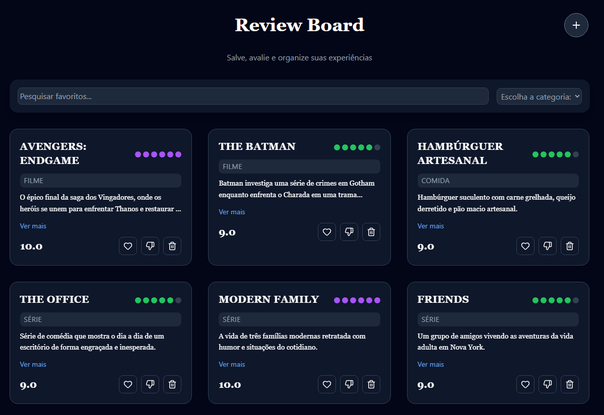

Sobre mim
Sou estudante de Engenharia de Software com foco em desenvolvimento Front-End, com interesse em construir interfaces modernas, acessíveis e funcionais
Tenho experiência prática com HTML, CSS, JavaScript e React, desenvolvendo projetos práticos que envolvem gerenciamento de estado, manipulação de dados e organização de código, com foco na experiência do usuário. Busco constantemente melhorar minhas habilidades técnicas e criar soluções eficientes.
Projetos

Controle de Gastos
Aplicação desenvolvida em React para controle de despesas pessoais, permitindo organização financeira por período e visualização de dados.
O projeto foi construído com foco na experiência do usuário, oferecendo interface simples, navegação intuitiva e manipulação dinâmica de dados.
Funcionalidades: Cadastro de despesas, filtros por período, visualização de informações
Tecnologias: React, JavaScript, Tailwind

Lista de Tarefas
Aplicação desenvolvida em React com foco em gerenciamento de tarefas, permitindo adicionar, remover e marcar itens como concluídos.
Projeto voltado para prática de manipulação de estado e organização de componentes.
Funcionalidades: CRUD completo com React e gerenciamento de estado.
Tecnologias: React, JavaScript, Tailwind

Review Board
Aplicação desenvolvida em React para organizar e avaliar favoritos pessoais, permitindo salvar conteúdos, atribuir notas e categorizar itens.
Projeto criado com foco em manipulação de estado, componentização e experiência do usuário com filtros e pesquisa dinâmica.
Funcionalidades: Adição de favoritos, sistema de notas, like/dislike, filtros por categoria, pesquisa e armazenamento local.
Tecnologias: React, JavaScript e Tailwind.

Jogo da velha
Jogo da velha desenvolvido com JavaScript puro, focado na lógica de jogo e manipulação do DOM.
Projeto utilizado para praticar lógica de programação e interatividade.

To-do List
Lista de tarefas desenvolvida com HTML, CSS e JavaScript, permitindo adicionar, remover e gerenciar tarefas.
Projeto com foco em interatividade e manipulação de elementos na tela.
Habilidades
- HTML
- CSS
- JavaScript
- React
- Tailwind CSS
Extras
- MySQL
- C
- Node.js
- Java
Diferenciais:
- Projetos práticos publicados e funcionais
- Experiência com React e gerenciamento de estado
- Consumo de API e manipulação de dados
- Versionamento com Git e GitHub
- Foco em boas práticas e experiência do usuário (UX)